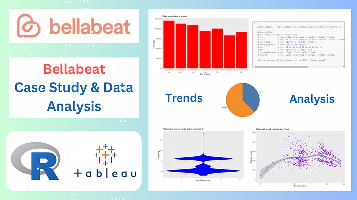

Leveraged Tableau to analyze Super Store discounts, uncover patterns, identify efficiency opportunities, and showcase data-driven decision-making through narrative storytelling.

Developed a well-structured MySQL database for efficient data management, utilizing SQL queries, foreign keys, and normalization to optimize data storage and retrieval.

Transformed messy layoff data into impactful dashboard using Microsoft Excel, delivered actionable insights through dynamic charts and clear communication.

Data-driven insights for Bellabeat: Cleaned and analyzed user data using R and Tableau to inform marketing strategy and product enhancements.
For more projects, visit my GitHub Account.